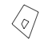
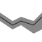
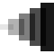
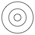

Function reference
Plot basics
All ggplot2 plots begin with a call to ggplot(), supplying default data and aesthethic mappings, specified by aes(). You then add layers, scales, coords and facets with +. To save a plot to disk, use ggsave().
-
ggplot() - Create a new ggplot
-
aes() - Construct aesthetic mappings
-
ggsave() - Save a ggplot (or other grid object) with sensible defaults
-
qplot()quickplot() - Quick plot
Geoms
A layer combines data, aesthetic mapping, a geom (geometric object), a stat (statistical transformation), and a position adjustment. Typically, you will create layers using a geom_ function, overriding the default position and stat if needed.
-

geom_abline()geom_hline()geom_vline() - Reference lines: horizontal, vertical, and diagonal
-

geom_bar()geom_col()stat_count() - Bar charts
-

geom_bin_2d()stat_bin_2d() - Heatmap of 2d bin counts
-

geom_blank() - Draw nothing
-

geom_boxplot()stat_boxplot() - A box and whiskers plot (in the style of Tukey)
-

geom_contour()geom_contour_filled()stat_contour()stat_contour_filled() - 2D contours of a 3D surface
-

geom_count()stat_sum() - Count overlapping points
-

geom_density()stat_density() - Smoothed density estimates
-
geom_density_2d()geom_density_2d_filled()stat_density_2d()stat_density_2d_filled() - Contours of a 2D density estimate
-

geom_dotplot() - Dot plot
-
geom_errorbarh() - Horizontal error bars
-
geom_function()stat_function() - Draw a function as a continuous curve
-

geom_hex()stat_bin_hex() - Hexagonal heatmap of 2d bin counts
-

geom_freqpoly()geom_histogram()stat_bin() - Histograms and frequency polygons
-

geom_jitter() - Jittered points
-

geom_crossbar()geom_errorbar()geom_linerange()geom_pointrange() - Vertical intervals: lines, crossbars & errorbars
-

geom_map() - Polygons from a reference map
-

geom_path()geom_line()geom_step() - Connect observations
-

geom_point() - Points
-

geom_polygon() - Polygons
-
geom_qq_line()stat_qq_line()geom_qq()stat_qq() - A quantile-quantile plot
-

geom_quantile()stat_quantile() - Quantile regression
-
geom_ribbon()geom_area() - Ribbons and area plots
-

geom_rug() - Rug plots in the margins
-

geom_segment()geom_curve() - Line segments and curves
-

geom_smooth()stat_smooth() - Smoothed conditional means
-

geom_spoke() - Line segments parameterised by location, direction and distance
-

geom_label()geom_text() - Text
-

geom_raster()geom_rect()geom_tile() - Rectangles
-

geom_violin()stat_ydensity() - Violin plot
-

coord_sf()geom_sf()geom_sf_label()geom_sf_text()stat_sf() - Visualise sf objects
Stats
A handful of layers are more easily specified with a stat_ function, drawing attention to the statistical transformation rather than the visual appearance. The computed variables can be mapped using after_stat().
-
stat_ecdf() - Compute empirical cumulative distribution
-
stat_ellipse() - Compute normal data ellipses
-
geom_function()stat_function() - Draw a function as a continuous curve
-
stat_identity() - Leave data as is
-
stat_summary_2d()stat_summary_hex() - Bin and summarise in 2d (rectangle & hexagons)
-
stat_summary_bin()stat_summary() - Summarise y values at unique/binned x
-
stat_unique() - Remove duplicates
-
stat_sf_coordinates() - Extract coordinates from 'sf' objects
-
after_stat()after_scale()stage() - Control aesthetic evaluation
Position adjustment
All layers have a position adjustment that resolves overlapping geoms. Override the default by using the position argument to the geom_ or stat_ function.
-

position_dodge()position_dodge2() - Dodge overlapping objects side-to-side
-
position_identity() - Don't adjust position
-

position_jitter() - Jitter points to avoid overplotting
-
position_jitterdodge() - Simultaneously dodge and jitter
-
position_nudge() - Nudge points a fixed distance
-

position_stack()position_fill() - Stack overlapping objects on top of each another
Annotations
Annotations are a special type of layer that don’t inherit global settings from the plot. They are used to add fixed reference data to plots.
-
geom_abline()geom_hline()geom_vline() - Reference lines: horizontal, vertical, and diagonal
-
annotate() - Create an annotation layer
-
annotation_custom() - Annotation: Custom grob
-
annotation_logticks() - Annotation: log tick marks
-
annotation_map() - Annotation: a map
-
annotation_raster() - Annotation: high-performance rectangular tiling
-
borders() - Create a layer of map borders
Aesthetics
The following help topics give a broad overview of some of the ways you can use each aesthetic.
-
aes_colour_fill_alpha - Colour related aesthetics: colour, fill, and alpha
-
aes_group_order - Aesthetics: grouping
-
aes_linetype_size_shape - Differentiation related aesthetics: linetype, size, shape
-
aes_position - Position related aesthetics: x, y, xmin, xmax, ymin, ymax, xend, yend
Scales
Scales control the details of how data values are translated to visual properties. Override the default scales to tweak details like the axis labels or legend keys, or to use a completely different translation from data to aesthetic. labs() and lims() are convenient helpers for the most common adjustments to the labels and limits.
-
expand_limits() - Expand the plot limits, using data
-
expansion()expand_scale() - Generate expansion vector for scales
-

scale_alpha()scale_alpha_continuous()scale_alpha_binned()scale_alpha_discrete()scale_alpha_ordinal() - Alpha transparency scales
-
scale_x_binned()scale_y_binned() - Positional scales for binning continuous data (x & y)
-
scale_colour_brewer()scale_fill_brewer()scale_colour_distiller()scale_fill_distiller()scale_colour_fermenter()scale_fill_fermenter() - Sequential, diverging and qualitative colour scales from ColorBrewer
-

scale_colour_continuous()scale_fill_continuous()scale_colour_binned()scale_fill_binned() - Continuous and binned colour scales
-
scale_colour_discrete()scale_fill_discrete() - Discrete colour scales
-
scale_x_continuous()scale_y_continuous()scale_x_log10()scale_y_log10()scale_x_reverse()scale_y_reverse()scale_x_sqrt()scale_y_sqrt() - Position scales for continuous data (x & y)
-

scale_x_date()scale_y_date()scale_x_datetime()scale_y_datetime()scale_x_time()scale_y_time() - Position scales for date/time data
-
scale_x_discrete()scale_y_discrete() - Position scales for discrete data
-

scale_colour_gradient()scale_fill_gradient()scale_colour_gradient2()scale_fill_gradient2()scale_colour_gradientn()scale_fill_gradientn() - Gradient colour scales
-

scale_colour_grey()scale_fill_grey() - Sequential grey colour scales
-

scale_colour_hue()scale_fill_hue() - Evenly spaced colours for discrete data
-
scale_colour_identity()scale_fill_identity()scale_shape_identity()scale_linetype_identity()scale_alpha_identity()scale_size_identity()scale_discrete_identity()scale_continuous_identity() - Use values without scaling
-

scale_linetype()scale_linetype_binned()scale_linetype_continuous()scale_linetype_discrete() - Scale for line patterns
-
scale_linewidth()scale_linewidth_binned() - Scales for line width
-

scale_colour_manual()scale_fill_manual()scale_size_manual()scale_shape_manual()scale_linetype_manual()scale_alpha_manual()scale_discrete_manual() - Create your own discrete scale
-

scale_shape()scale_shape_binned() - Scales for shapes, aka glyphs
-

scale_size()scale_radius()scale_size_binned()scale_size_area()scale_size_binned_area() - Scales for area or radius
-
scale_colour_steps()scale_colour_steps2()scale_colour_stepsn()scale_fill_steps()scale_fill_steps2()scale_fill_stepsn() - Binned gradient colour scales
-

scale_colour_viridis_d()scale_fill_viridis_d()scale_colour_viridis_c()scale_fill_viridis_c()scale_colour_viridis_b()scale_fill_viridis_b() - Viridis colour scales from viridisLite
-
get_alt_text() - Extract alt text from a plot
Guides: axes and legends
The guides (the axes and legends) help readers interpret your plots. Guides are mostly controlled via the scale (e.g. with the limits, breaks, and labels arguments), but sometimes you will need additional control over guide appearance. Use guides() or the guide argument to individual scales along with guide_*() functions.
-
draw_key_point()draw_key_abline()draw_key_rect()draw_key_polygon()draw_key_blank()draw_key_boxplot()draw_key_crossbar()draw_key_path()draw_key_vpath()draw_key_dotplot()draw_key_linerange()draw_key_pointrange()draw_key_smooth()draw_key_text()draw_key_label()draw_key_vline()draw_key_timeseries() - Key glyphs for legends
-
guide_colourbar()guide_colorbar() - Continuous colour bar guide
-
guide_legend() - Legend guide
-
guide_axis() - Axis guide
-
guide_bins() - A binned version of guide_legend
-
guide_coloursteps()guide_colorsteps() - Discretized colourbar guide
-
guide_none() - Empty guide
-
guides() - Set guides for each scale
-
sec_axis()dup_axis()derive() - Specify a secondary axis
Facetting
Facetting generates small multiples, each displaying a different subset of the data. Facets are an alternative to aesthetics for displaying additional discrete variables.
-

facet_grid() - Lay out panels in a grid
-

facet_wrap() - Wrap a 1d ribbon of panels into 2d
-
vars() - Quote faceting variables
Labels
These functions provide a flexible toolkit for controlling the display of the “strip” labels on facets.
-
labeller() - Construct labelling specification
-
label_value()label_both()label_context()label_parsed()label_wrap_gen() - Useful labeller functions
-
label_bquote() - Label with mathematical expressions
Coordinate systems
The coordinate system determines how the x and y aesthetics combine to position elements in the plot. The default coordinate system is Cartesian (coord_cartesian()), which can be tweaked with coord_map(), coord_fixed(), coord_flip(), and coord_trans(), or completely replaced with coord_polar().
-

coord_cartesian() - Cartesian coordinates
-

coord_fixed() - Cartesian coordinates with fixed "aspect ratio"
-

coord_flip() - Cartesian coordinates with x and y flipped
-

coord_map()coord_quickmap() - Map projections
-

coord_polar() - Polar coordinates
-
coord_trans() - Transformed Cartesian coordinate system
Themes
Themes control the display of all non-data elements of the plot. You can override all settings with a complete theme like theme_bw(), or choose to tweak individual settings by using theme() and the element_ functions. Use theme_set() to modify the active theme, affecting all future plots.
-
theme() - Modify components of a theme
-
theme_grey()theme_gray()theme_bw()theme_linedraw()theme_light()theme_dark()theme_minimal()theme_classic()theme_void()theme_test() - Complete themes
-
theme_get()theme_set()theme_update()theme_replace()`%+replace%` - Get, set, and modify the active theme
-
margin()element_blank()element_rect()element_line()element_text()rel() - Theme elements
Programming with ggplot2
These functions provides tools to help you program with ggplot2, creating functions and for-loops that generate plots for you.
-
aes_()aes_string()aes_q() - Define aesthetic mappings programmatically
-
print(<ggplot>)plot(<ggplot>) - Explicitly draw plot
Extending ggplot2
To create your own geoms, stats, scales, and facets, you’ll need to learn a bit about the object oriented system that ggplot2 uses. Start by reading vignette("extending-ggplot2") then consult these functions for more details.
-
ggproto()ggproto_parent()is.ggproto() - Create a new ggproto object
-
print(<ggproto>)format(<ggproto>) - Format or print a ggproto object
Vector helpers
ggplot2 also provides a handful of helpers that are useful for creating visualisations.
-
cut_interval()cut_number()cut_width() - Discretise numeric data into categorical
-
mean_cl_boot()mean_cl_normal()mean_sdl()median_hilow() - A selection of summary functions from Hmisc
-
mean_se() - Calculate mean and standard error of the mean
-
resolution() - Compute the "resolution" of a numeric vector
Data
ggplot2 comes with a selection of built-in datasets that are used in examples to illustrate various visualisation challenges.
-
diamonds - Prices of over 50,000 round cut diamonds
-
economicseconomics_long - US economic time series
-
faithfuld - 2d density estimate of Old Faithful data
-
midwest - Midwest demographics
-
mpg - Fuel economy data from 1999 to 2008 for 38 popular models of cars
-
msleep - An updated and expanded version of the mammals sleep dataset
-
presidential - Terms of 12 presidents from Eisenhower to Trump
-
seals - Vector field of seal movements
-
txhousing - Housing sales in TX
-
luv_colours colors()in Luv space
Autoplot and fortify
autoplot() is an extension mechanism for ggplot2: it provides a way for package authors to add methods that work like the base plot() function, generating useful default plots with little user interaction. fortify() turns objects into tidy data frames: it has largely been superceded by the broom package.
-
autoplot() - Create a complete ggplot appropriate to a particular data type
-
autolayer() - Create a ggplot layer appropriate to a particular data type
-
fortify() - Fortify a model with data.
-
map_data() - Create a data frame of map data